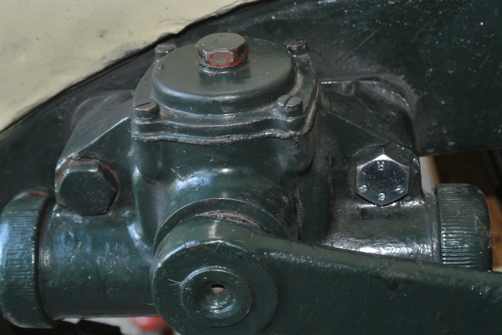
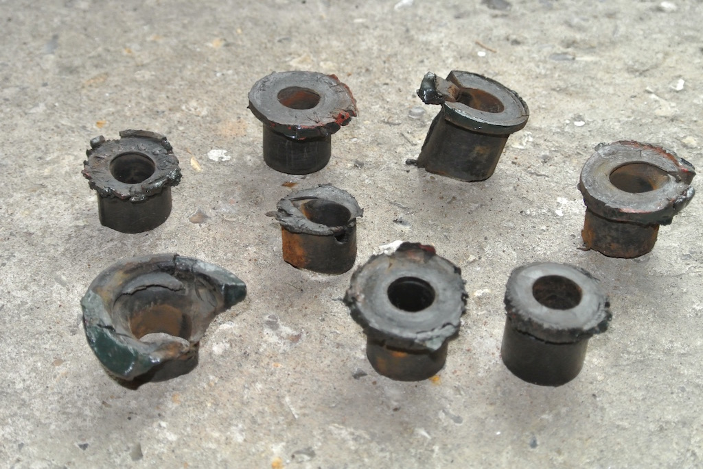
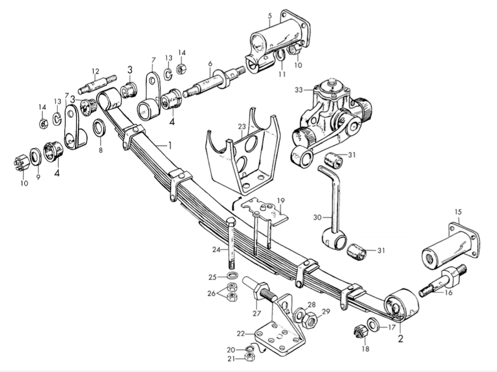
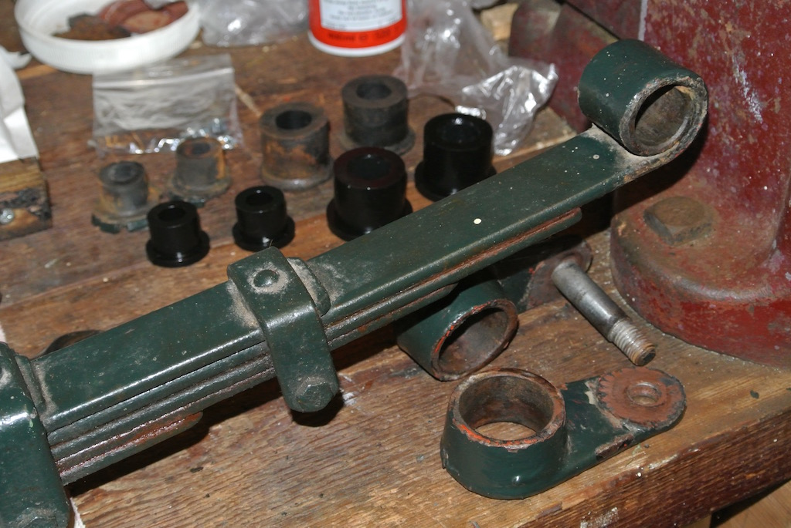
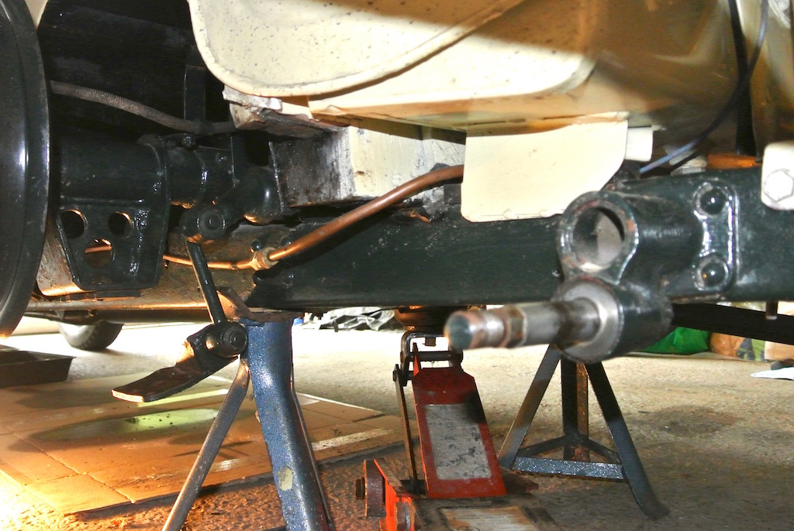
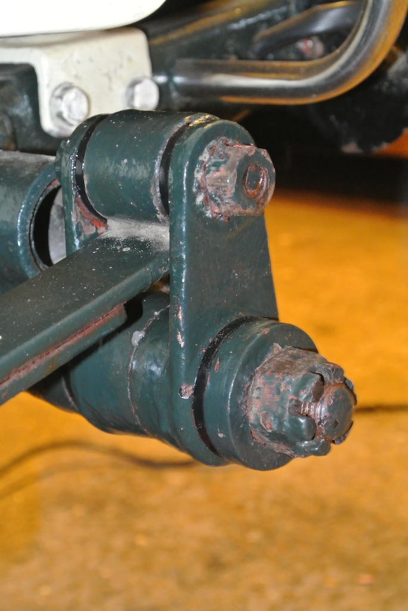
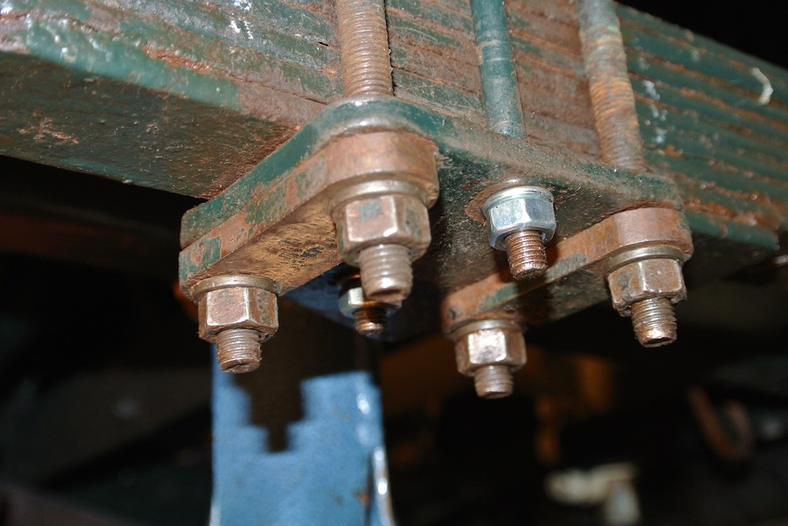

While on the South Downs Run in 2016 I could hear a 'clanking' coming from the front near side. Later investigation discovered that one of the bolts on the damper was loose. It was also apparent that the bolt was not the same size as the other damper bolts. The photo shows the new bolt before I painted it. However, the diameter of the old bolt was correct, if the head of the bolt was not. I initially bought a 3/8" BSW bolt because a 3/8" BSW spanner fitted the original bolts. However, It turned out to need a 7/16" BSW bolt! Some notes on BSW sizing can be found here.
Initially I had thought that the 'clanking' might be due to perished rubber bushes in the front spring shackles. Even though there didn't seem to be excessive movement in the bushes I decided, towards the end of September 2016, to replace them with polyurethane bushes from John James.
It took quite a lot of effort to remove the plates and pins from the near-side front spring. Having removed the bushes it was clear that they were in a much worse condition than I had thought! I cleaned up all the pieces (and the inside of the tube and spring eye), painted the sides of the shackle plates and touched up the chassis. The off-side front spring shackle and bushes came apart more easily than the near-side, but I still needed to paint the shackle plates. The new polyurethane bushes fitted easily, particularly with a little of the grease supplied with them. Replacing the shackles was relatively straight forward, although I had to screw the nuts on one side of each shackle pin in the vice before fitting the pins and plate, then the other plate and nuts. The near-side was a little more difficult to replace, since the spring seemed to be slightly twisted. Anyway, with a little adjustment of the jack under the axle and one under the end of the spring I got both sides fitted and the nuts painted.
The photos show the original bushes after the shackle has been removed, then with the bushes removed and finally with the new bushes fitted and the shackle replaced, with the nuts painted.
The difference in the smoothness of the ride and the stability of the handling was quite noticeable.
Following the success of the new polyurethane front spring bushes I decided to replace those on the rear springs. This was going to be a more difficult job. With the front springs I could remove the shackles without removing the springs. However, at the rear it was necessary to remove the whole spring so as to remove the rubber bushes at the rear. As you can see from this sketch ('borrowed' from the NTG catalogue), the chassis/shackle pin (item 6) cannot be withdrawn.
So it was necessary to remove the forward pin nut (18), the studs from the spring top plate (19), the four axle to damper plate bolts (24) and the chassis pin nut (10). Reading an undated document by Carl Fritz helped.
So on Saturday October 22nd I started trying to remove the near-side rear spring. The nuts came off reasonably easily and I discovered that the tightness of the nuts on the studs from the spring top plate caused them to unscrew from the plate. Before removing the bolts that hold the spring to the axle I supported the spring with a jack. Then, having removed the bolts, I was able to lower the jack until the spring had fully flexed.
The rear of the spring, with the rubber bushes, moved on the pin quite easily with a little leverage. However, the other end, with the 'silentblock' (2), would not budge. The silentblock is three concentric cylinders, two of steel, sandwiching one of rubber and fits in the front eye of the spring. So I sprayed on some penetrating oil and left it overnight. Then a heave with a lever (against a block of wood on the chassis) freed it.
I'd been told that the silentblock doesn't usually need replacing and it looked in good condition, so I didn't try to remove it. In fact, as you can see from the photo, the rubber bushes were not in too bad a condition. The shiny black items are the new polyurethane bushes. I put tie-wraps around the spring leafs to prevent the lower three from falling off and marked the springs with a wax crayon line, as Carl had suggested, in case I needed to reassemble them. Actually the tie-wraps were too thin and broke as I was trying to refit the near-side spring. So I used two G-cramps to hold the lower leafs in place.
 Having removed the bolts that hold the spring to the axle I was able to push the lower plate (22) out of the way, against the resistance of the damper. In this photo you can see the lower plate, still attached to the damper.
I touched up some of the paint on the shackle and inserted the new bushes, using a little of the supplied grease. The diagram shows a fibre washer (8) between the two halves of the shackle. However, there was no sign of a washer and so, as suggested by John James, I put a little translucent silicone sealant between the two metal faces so as to form a seal. Then it was just a case of pushing the spring back on to the fore and aft pins, jacking up the spring and refitting the bolts, which I had cleaned with a wire brush.
These final two images show the spring in place, with the new bushes, but before I had touched up the paint.
Replacing the bushes on the off-side spring was a repeat procedure, except that every nut was more difficult to undo! Also, leverage failed to shift the front end of the spring from its pin. I had to resort to tapping the back of the spring with a hammer so as to gradually slide the spring off the pin.
However, by October 27th I had refitted both springs, but with the nuts on the two pins not completely tightened. I then lowered the car to the ground so as to put the shackles in their normal position before tightening the nuts. Then I touched up the paint on the shackle nuts and, the next day, inserted split pins through the lower, castleated nuts.
A short test drive showed quite a stable ride. Even at 50mph the car was still stable.
© David James 2016 Last updated: 31st October 2016